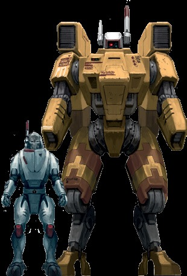

X9灾害近距离支援装甲——简称X9灾害战斗服——是土氏族对大型战斗服研究的成果之一。尽管每套9的建造都是一笔可观的投入，但这些战斗服已经一次又一次地向许多火氏族指挥官证明了它们的价值。9非常擅长在近距离与敌人交战，用令人难以置信的强大武器将他们炸成碎片，同时又使用它的光子折射器和矢量喷射推进器来保持对敌人遥不可及的距离。它更大的尺寸也为它的飞行员提供了更高级别的保护，种指挥官们经常将之化为优势的价值，他们将这些战斗服横在一支敌方强力部队必经之路上，同时其他战士则进入埋伏位置准备发动致命一击。在钛族战争学说中充当诱饵并不是一件容易的事，通常只有能够充分利用这些战斗服的特殊能力的极其顽强的老兵才能获得X9灾害战斗服的使用资格。
护甲点数：14全身
挂点：4
体型：大型
力量：65
主要系统：黑阳滤镜、增强型动力系统、环境密封装置、喷气背包、多重追踪器
推荐挂载：两把融合喷射炮或两把双联脉冲速射炮或两把相位离子炮、矢量喷射推进器，兵蜂控制器或目标锁定器
稀有度：近乎唯一
X9灾害战斗服设计用于近距离战斗，将敌人炸成碎片，并用在扬长而去之前用它的光子折射器致盲敌人。这些战斗服能够使用下列的战争装备：
光子折射器：这些安装在膝盖上的防御性武器释放出耀眼的光芒，使驾驶员的敌人眼花缭乱，让他们变得脆弱不堪或让驾驶员有机会从近战中逃脱。
作为一个部分动作或反应，X9灾害战斗服的驾驶员可以进行一次常规难度的+20弹道技能检定，以使用光子折射器致盲他的敌人。如果他成功了，战斗服会释放一道以自身为中心的电磁脉冲，其效果等同于钛族光子手榴弹的爆炸（参见第29页。）
